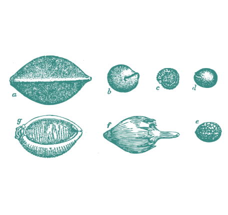
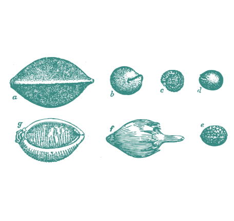

Grand Challenges Adopted to Meet Local Needs
In 2015, Tom Peters, Executive Director of the South Carolina Coalition for Mathematics & Science
(SCCMS), was working on developing a strategic plan for STEM education in South Carolina when he
attended a STEMx conference and heard 100Kin10’s Talia Milgrom-Elcott speak about the Grand Challenges
in STEM. With a background in science and ecology, Peters was fascinated by the ecosystem approach to
understanding STEM challenges, and before long, he and his colleagues adopted the Grand Challenge
framework for their work in South Carolina.
Partnering with 100Kin10, SCCMS hosted an unconference that brought together leaders to examine
state-wide STEM challenges from an ecosystem approach. With 100Kin10’s support designing and
facilitating the unconference, participants from across the state were able to recognize a common need
to address the value and perception of STEM education in South Carolina and identify five key challenges
to focus on. After the unconference, SCCMS was able to distill everything they’d learned in the South
Carolina STEM Grand Challenges, which they shared publicly during STEM Education Day at the State
Capitol.
Peters explained that through the Grand Challenge approach, SCCMS “staked a claim about priorities that
is more invitational, accessible, and actionable than a typical strategic plan,” and the results are a
clear indication this is true. The five challenges SCCMS and its partners identified have been adopted
by the South Carolina Coordinating Council for Workforce Development, and the state’s STEM Education Day
has evolved into STEM Education Month, including new grant programs and awards for teachers. SCCMS has
also grown its partnership network, helped curate new STEM-focused frameworks for the SC Department of
Commerce, and is developing and piloting a STEM Teacher Leader program to build capacity and increase
teacher retention in rural communities in South Carolina.


 



 Introduction
Introduction STRATEGY 1 Build a Coalition
STRATEGY 1 Build a Coalition STRATEGY 2 Understand,
STRATEGY 2 Understand, STRATEGY 3 Support People to Work
STRATEGY 3 Support People to Work STRATEGY 4 Avoid Recreating
STRATEGY 4 Avoid Recreating STRATEGY 5 Mobilize Problem Solving
STRATEGY 5 Mobilize Problem Solving Stumbles and Learnings
Stumbles and Learnings Looking Beyond 2021
Looking Beyond 2021